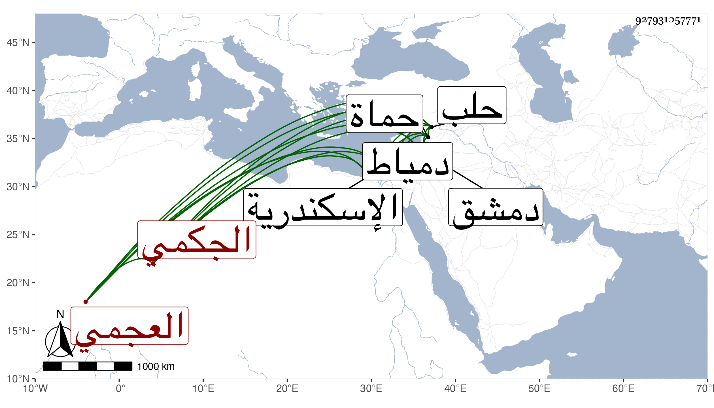

0902Sakhawi.DawLamic.ITO20230111-ara1.EIS1600.927931057771
Biography ID: 927931057771
29
بردبك العجمي الجكمي جكم من عوض . تنقل في الولايات ثم عمل في الايام الاشرفية الحجوبية بحلب ثم في أول أيام الظاهر النيابة بحماة ، وأقام بها إلى أن تنافر مع أهلها وقتل منهم جماعة بل وخرج عن الطاعة وآل أمره إلى أن أمسك ثم سجن باسكندرية ثم نقل إلى دمياط ثم صار في سنة ثلاث وخمسين أحد المقدمين بدمشق وتوجه وهو كذلك أمير الحاج الشامي فحج ثم عاد فلم يلبث أن مات في أوائل رجب سنة خمس وخمسين .
